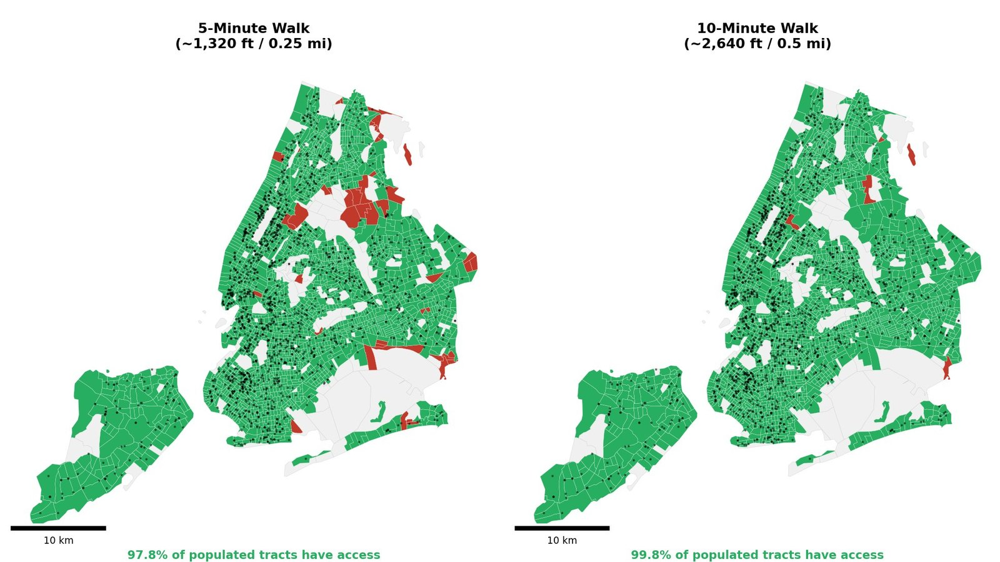
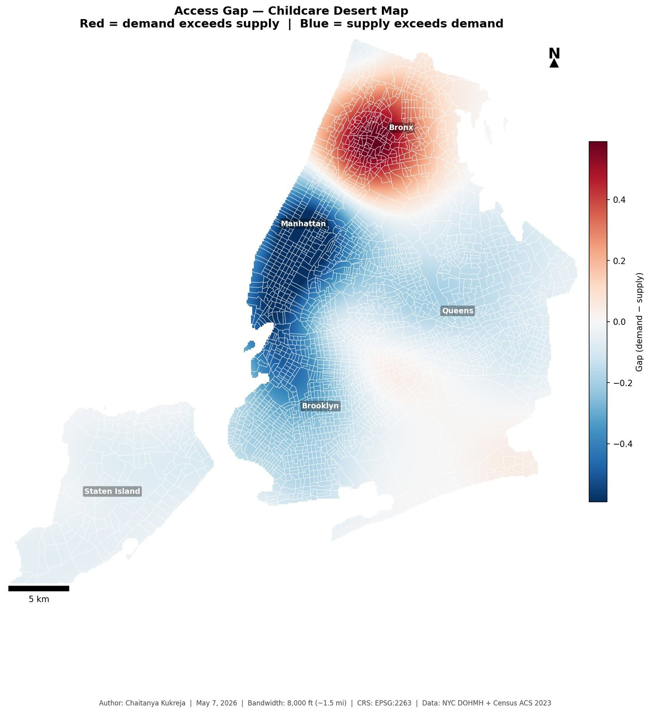
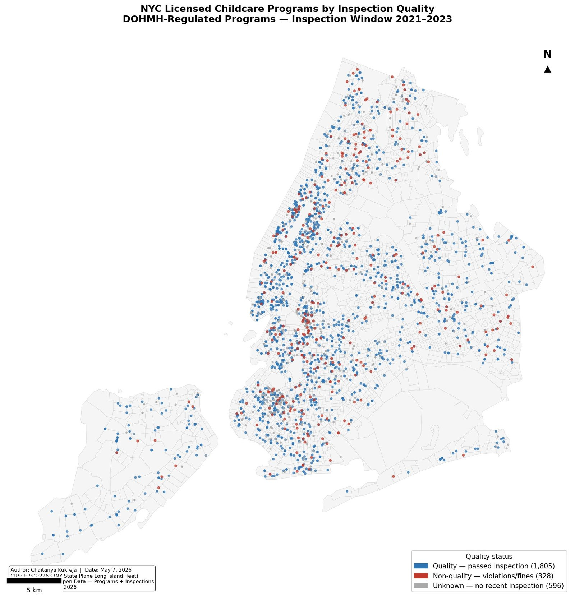
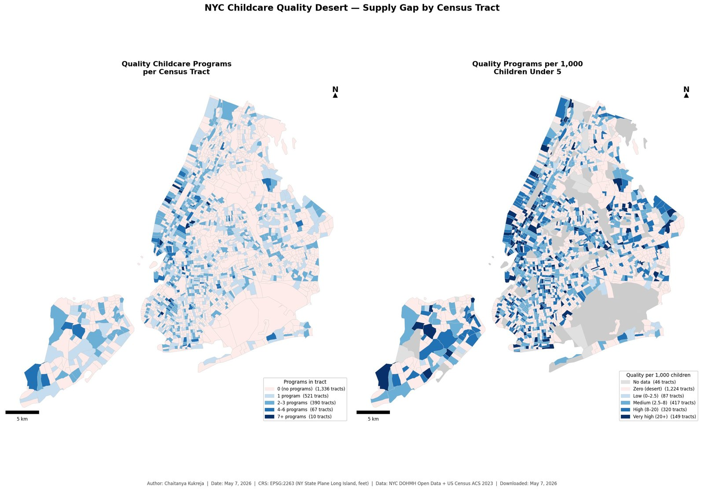
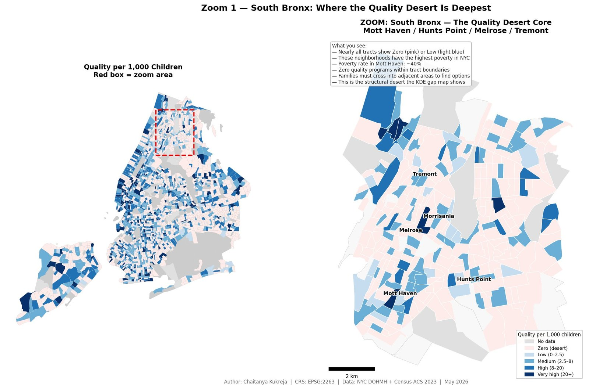

Measuring quality childcare access as a spatial equity problem in New York City
Chaitanya Kukreja · MSc Urban Data Science, NYU Center for Urban Science + Progress (CUSP) Analysis completed May 2026 · data as of May 7, 2026
97.8%of populated census tracts are within a 5-minute walk of a quality program
2.2 vs 10.7quality programs per 1,000 children, average Bronx vs. Manhattan tract
220census tracts form clustered low-access “deserts” (LISA low–low)
Why this project
At the NYC Open Data Week Questions Lab on March 27, 2026, convened by The GovLab, Brooklyn Public Library and the NYU Alliance for Public Interest Technology, one question kept coming up at the early childhood and education table: where are the quality childcare programs? On April 1, 2026, New York City launched a child care website and interactive map. In later informal conversations, parents said childcare has to be near home.
So this study asks: does every neighborhood have enough quality childcare, within walking distance of home, for the children who need it?
Programs studied: center-based childcare licensed by the NYC Department of Health and Mental Hygiene (DOHMH), for children from birth to age 5: 2,289 Group Child Care centers and 440 School-Based Child Care programs (2,729 with a location). By age group, 571 are infant–toddler programs and 2,158 are preschool programs. Home-based family child care is not included.
Finding 1
Nearby is not the problem
Measured as walking time on the real street network at 3 mph, 97.8% of populated tracts are within 5 minutes of at least one quality program, and 99.8% within 10 minutes.

Has access
No access
Quality program
Unpopulated
Finding 2
Quality per child is the problem
Having one program nearby does not mean there is a place for every child. Per child, the Bronx has far less quality care than Manhattan.
Measure
Bronx
Manhattan
Quality programs per 1,000 children (average tract)
2.2
10.7
Poverty rate (average tract)
26.4%
15.9%
Quality rate among inspected programs
71.1%
89.1%
Tracts with zero quality programs
68.7%
37.4%

Need exceeds quality supply
Quality supply exceeds need
Gap = demand density (children under 5 weighted by poverty rate) minus supply density (quality programs). Kernel bandwidth 8,000 ft.
Finding 3
The gaps cluster, in two different ways
Low access is not randomly scattered. Global Moran’s I is small but significant (≈ 0.023, p < 0.05) and holds across four definitions of “neighbor.” Local analysis (LISA) separates two kinds of desert that need different responses.
Queen contiguity weights, 999 permutations, p < 0.05. Because LISA uses random permutations, counts can shift by one or two tracts between runs.
Method
Score quality. Each program’s most recent NYC Health Department inspection (2021–23): passed, violations corrected, or no reinspection required = quality. Programs with no inspection in the window are “unknown,” not failing.
Join to census tracts. Programs and demographics share no ID, so a spatial join links them.
Walk access. Multi-source shortest paths on the OpenStreetMap walking network from all quality programs, measured to each tract’s center.
Supply vs. demand. Kernel density surfaces for quality programs and for poverty-weighted children, then the difference.
Clustering. Global Moran’s I, then LISA and Getis-Ord Gi* for local patterns.
Framework adapted from Rozhkov, Zandiatashbar & Seyrfar (2025), who mapped transit deserts in Chicago.
Robustness
Check
I
p
Moran’s I, queen contiguity (main)
0.023
0.035
Moran’s I, 4 nearest neighbors
0.028
0.031
Moran’s I, 8 nearest neighbors
0.024
0.024
Moran’s I, 5,000 ft distance band
0.025
0.006
Bivariate: access × poverty rate
−0.063
0.001
Negative bivariate I means higher-poverty tracts tend to sit next to lower-access tracts. This shows association, not cause.
Limitations
Only center-based programs are included; home-based family child care is not.
Quality is the inspection result only. It does not measure curriculum, staff, cost or hours.
596 programs had no inspection in 2021–23 and are treated as unknown.
The analysis counts programs, not seats; capacity is missing for about 13% of programs.
Walking access is measured from each tract’s center. Transit is not yet included.
Per-child figures are averages of tract values, so small tracts can move them.
Parent input came from informal conversations, not a formal survey.
More maps

Quality (1,805)
Non-quality (328)
Unknown (596)

Left: quality programs per tract. Right: per 1,000 children under 5.

Zero
Low (0–2.5)
Medium (2.5–8)
High (8–20)
Very high (20+)
South Bronx (Mott Haven, Hunts Point, Melrose, Tremont), quality programs per 1,000 children.
Data and credits
NYC Department of Health and Mental Hygiene, child care programs (gy3q-4tzp) and inspections (dsg6-ifza), NYC Open Data. Downloaded May 7, 2026.
U.S. Census Bureau, American Community Survey 2023 5-year estimates, and 2023 cartographic boundary files for census tracts.
Rozhkov, A., Zandiatashbar, A., & Seyrfar, A. (2025). Tackling transportation inequality through unveiling Chicago’s transit deserts and vulnerable communities. Journal of Urban Planning and Development, 151(3), 04025030. doi:10.1061/JUPDDM.UPENG-5499
Thanks to The GovLab, Brooklyn Public Library and the NYU Alliance for Public Interest Technology for the Questions Lab, and to NYU CUSP.
Contact and citation
cak10000@nyu.edu
Kukreja, C. (2026). Beyond Proximity: Measuring quality childcare access as a spatial equity problem in New York City [Lightning talk]. Harvard Center for Geographic Analysis Conference 2026.